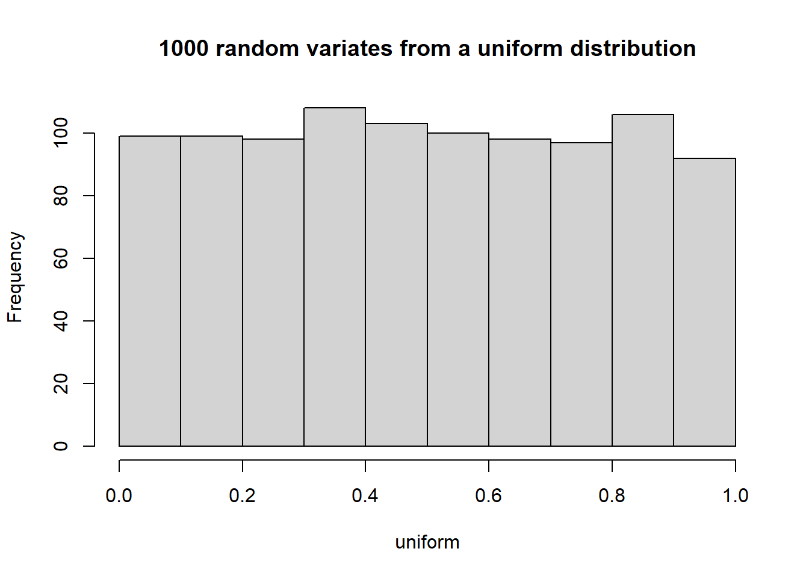
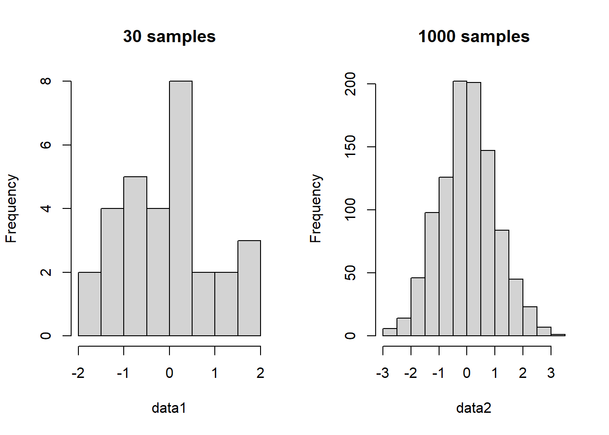
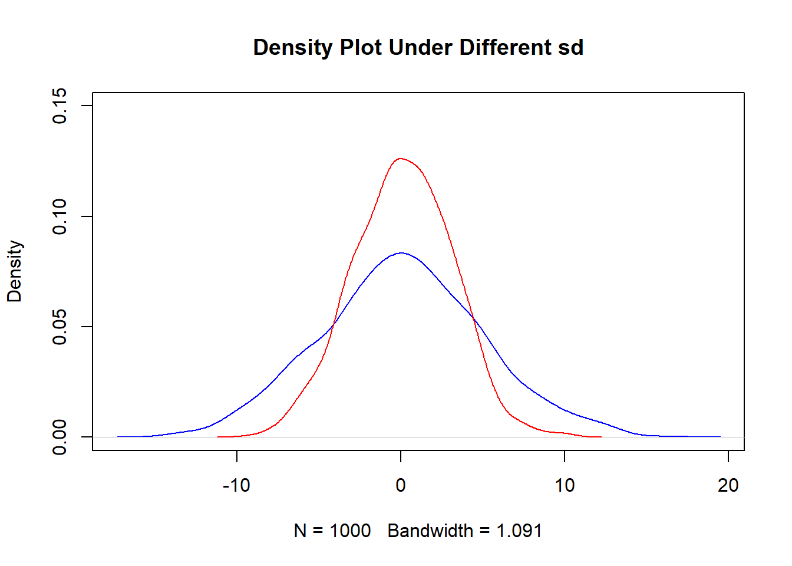
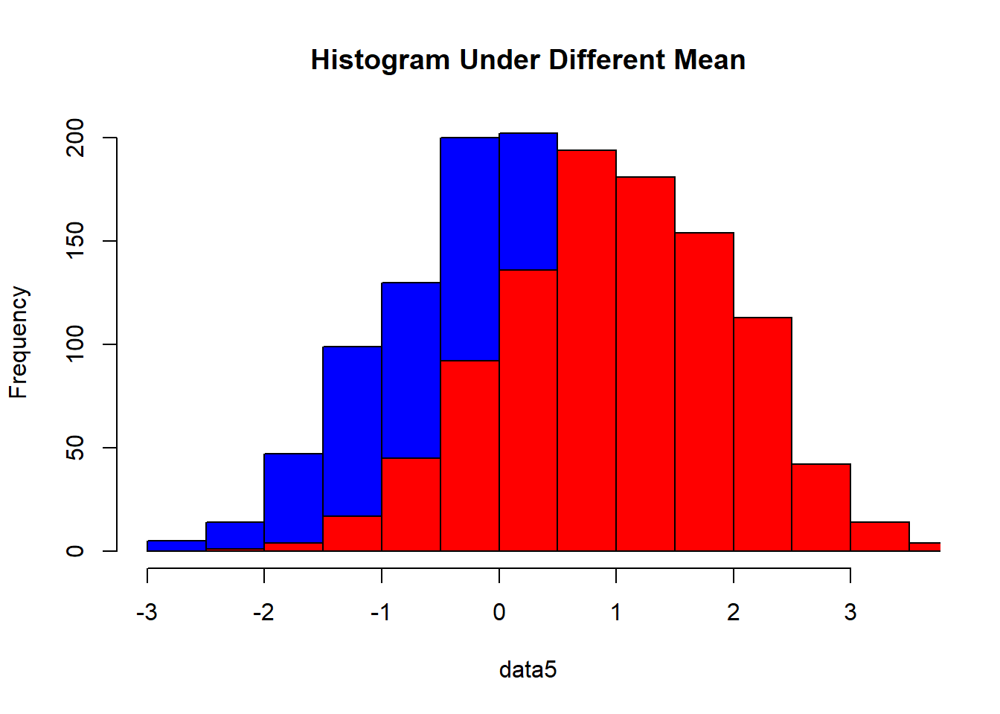
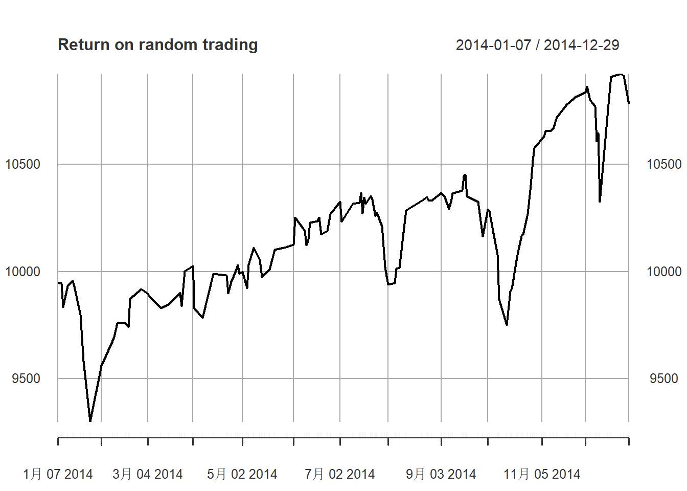

统计概率分布模拟
Boylad · 2018-10-27
生成随机样本
生成从1到10的随机样本：
sample(10)
## [1] 4 5 1 10 8 9 7 6 2 3如果需要再次生成同样样本，可以首先设置随机种子：
set.seed(123)
sample(10)
## [1] 3 10 2 8 6 9 1 7 5 4从1到10中随机挑选两个样本：
sample(10,2)
## [1] 10 5如果全量和样本大小需要作为参数，可以使用函数sample.int:
sample.int(10, size=2) #如果样本和全量的大小都已知，可以使用sample.int
## [1] 3 9可以模仿彩票游戏，从给定的42个全量数据中生成6个随机样本：
sample.int(42, 6)
## [1] 28 9 29 35 8 26可以通过设定参数replace为TRUE,用放回的方法生成随机样本：
sample(c(1,0), 10, replace = TRUE)
## [1] 1 0 1 0 1 0 0 1 1 1可以使用函数sample来模拟投硬币的例子：
sample(c("Head", "Tail"), 10, replace = TRUE)
## [1] "Head" "Tail" "Head" "Tail" "Tail" "Head" "Head" "Head" "Head" "Tail"可以模拟投掷200次公平的骰子：
fair <- sample(c(1:6), 200, replace = TRUE)
table(fair)
## fair
## 1 2 3 4 5 6
## 34 32 27 28 37 42一个更高级的例子是，模拟投掷一个灌铅的骰子200次：
loaded <- sample(c(1:6), 200, replace = TRUE, prob = c(0.1, 0.1 , 0.1, 0.1, 0.1, 0.5))
table(loaded)
## loaded
## 1 2 3 4 5 6
## 21 17 14 18 19 111默认情况下，每次R进程使用不同的随机种子序列生成不同的模拟结果。这个是根据当前时间和进程ID决定的。通过给函数set.seed设定一个值，伪随机数生成器会给.Random.seed指派一个整数向量。最终，所有的R进程都会使用这个种子序列，生成同样的结果：
set.seed(123)
sample(10)
## [1] 3 10 2 8 6 9 1 7 5 4
sample(10)
## [1] 10 5 3 8 1 4 6 9 7 2
set.seed(123)
sample(10)
## [1] 3 10 2 8 6 9 1 7 5 4
sample(10)
## [1] 10 5 3 8 1 4 6 9 7 2而且我们可以在控制台中键入.Random.seed查看整数向量：
set.seed(123)
head(.Random.seed)
## [1] 10403 624 -983674937 643431772 1162448557 -959247990
### 理解均匀分布
首先，可以使用函数runif从均匀分布中创建样本：
set.seed(123)
uniform <- runif(n = 1000, min = 0, max = 1)然后，我们绘制均匀分布样本的柱状图：
hist(uniform, main = "1000 random variates from a uniform distribution")
对于均匀分布，我们也可以看到，每个点的概率密度等于1，分布的密度函数等于分布自己：
length(dunif(uniform) == 1)
## [1] 1000
length(punif(uniform) == uniform)
## [1] 1000而且，我们可以使用函数sample模拟如何投掷骰子：
fair_dice <- sample(6, 1000, replace = TRUE)
table(fair_dice)
## fair_dice
## 1 2 3 4 5 6
## 171 152 177 154 161 185我们可以使用条状图可视化每个面的出现情况：
barplot(table(fair_dice), main = "Frequency of each side")
### 生成二项随机变量
首先，我们可以使用rbinom判断投掷10次骰子得到一次点数为6的频率：
set.seed(123)
rbinom(1, 10, 1/6)
## [1] 1然后，我们可以模拟100个赌徒投掷10次骰子，并观察每个赌徒得到几次6点：
set.seed(123)
sim <- rbinom(100, 10, 1/6)
table(sim)
## sim
## 0 1 2 3 4 5
## 17 36 23 18 4 2另外，我们可以模拟1000个人投掷10次硬币，并计算出正面的总数：
set.seed(123)
sim2 <- rbinom(1000, 10, 1/2)
table(sim2)
## sim2
## 0 1 2 3 4 5 6 7 8 9 10
## 2 11 43 126 200 241 213 106 48 9 1
barplot(table(sim2), main = "A simulation of 1000 people tossing a coin 10 times")然后，我们可以使用dbinom获取投掷10次骰子正好得到一个6点的概率：
dbinom(1, 10, 1/6)
## [1] 0.3230112如果我们想计算投掷10次骰子少于3次6点的概率，我们可以使用函数pbinom：
dbinom(0, 10, 1/6) + dbinom(1, 10, 1/6) + dbinom(2, 10, 1/6) + dbinom(3, 10, 1/6)
## [1] 0.9302722
pbinom(3, 10, 1/6)
## [1] 0.9302722除了使用标准的R函数，我们也可以使用gbinom来绘制二项分布：
source('https://www.stat.wisc.edu/~larget/R/prob.R')
gbinom(n = 100, p = 0.5, scale = T, a = 45, b = 55)
### 生成泊松随机变量
可以使用函数rpois生成泊松分布的样本：
set.seed(123)
poisson <- rpois(1000, lambda = 3)把泊松分布的样本数据绘制成柱状图：
hist(poisson, main = "A histogram of a Possin distribution")获取x=2处的分布函数高度：
dpois(2, lambda = 3)
## [1] 0.2240418我们可以使用barplot绘制函数dpois中的样本数据：
barplot(dpois(0:10, lambda = 3), names = 0:10, main = "A barplot of a Poisson distribution")然后使用函数ppois计算从x=1到5覆盖面积的占比：
ppois(5, lambda = 3) - ppois(1, lambda = 3)
## [1] 0.7169338我们也可以比较不同的lambda值对应的样本密度图(lambda值越大，柱状图越趋向于正态分布)：
set.seed(123)
poisson1 <- rpois(1000, lambda = 3)
hist(poisson1, breaks = seq(0, 20, by = 1), col = rgb(1, 0, 0, 1),
xlim = c(0, 15), ylim = c(1, 300),
main = 'Histograms with different lambda')
poisson2 <- rpois(1000, lambda = 5)
hist(poisson2, breaks = seq(0, 20, by = 1), col = rgb(0, 0, 1, 0.6), add = T)
poisson3 <- rpois(1000, lambda = 7)
hist(poisson3, breaks = seq(0, 20, by = 1), col = rgb(0, 1, 0, 0.2), add = T)我们可以使用概率分位数函数qpois，来转换泊松分布的累积分布：
qpois(ppois(2, lambda = 3), lambda = 3)
## [1] 2从正态分布中抽样
首先，使用函数rnorm生成30个和1000个正态分布样本：
set.seed(123)
data1 <- rnorm(30)
data2 <- rnorm(1000)然后，我们使用hist绘制data1和data2的柱状图：
par(mfrow = c(1, 2))
hist(data1, main = "30 samples")
hist(data2, main = "1000 samples")
也可以从样本数据中抽取密度属性，并使用函数lines给柱状图添加密度曲线：
par(mfrow = c(1,1))
hist(data2, main = "Density curve over histogram", freq = FALSE)
den2 <- density(data2)
den2
##
## Call:
## density.default(x = data2)
##
## Data: data2 (1000 obs.); Bandwidth 'bw' = 0.2187
##
## x y
## Min. :-3.4658 Min. :0.0000206
## 1st Qu.:-1.6251 1st Qu.:0.0121127
## Median : 0.2156 Median :0.0776974
## Mean : 0.2156 Mean :0.1356826
## 3rd Qu.: 2.0564 3rd Qu.:0.2424239
## Max. : 3.8971 Max. :0.4192901
lines(x = den2$x, y = den2$y, col = "red", lwd = 3)另外，可以在一个密度图和柱状图中比较不同标准差下的分布：
set.seed(123)
data3 <- rnorm(1000, sd = 5)
data4 <- rnorm(1000, sd = 3)
plot(density(data3), col = "blue", ylim = c(0, 0.15),
main = "Density Plot Under Different sd")
lines(density(data4), col = "red", ylim = c(0, 0.15))
hist(data3, col = "blue", main = "Histogram Under Different sd",
ylim = c(0, 300))
hist(data4, col = "red", add = TRUE)另外，可以在一个密度图和柱状图中比较不同平均值下的分布：
set.seed(123)
data5 <- rnorm(1000, mean = 0)
plot(density(data5), col = "red", main = "Density Plot Under Different Mean")
data6 <- rnorm(1000, mean = 1)
lines(density(data6), col = "blue")hist(data5, col = "blue", main = "Histogram Under Different Mean")
hist(data6, col = "red", add = TRUE)
此外，如果你想绘制完美的正态曲线，你可以使用函数curve来连接从-3到3的概率分布高度：
plot(dnorm, -3, 3, main = "A normal distribution generated from dnorm function")我们也可以把密度曲线下的区域阴影化：
plot(dnorm, -3, 3, main = "A normal distribution generated from dnorm function")
x = c(-1, seq(-1, 1, 0.1), 1)
y = c(0, dnorm(seq(-1, 1, 0.1)), 0)
polygon(x, y, col = "blue")为了获取0处的概率分布高度，我们可以使用函数dnorm:
dnorm(0)
## [1] 0.3989423另外，为了计算x从-1到1之间的曲线下面积，我们可以使用累积分布函数：
pnorm(1) - pnorm(-1)
## [1] 0.6826895为了绘制pnorm的图形，可以使用函数curve:
curve(pnorm(x), -3, 3, main = "Cumulative distribution function")为了算出一个点，满足分布累积出一个特定的密度值，我们可以使用分位数函数qnorm来反转求知pnorm。从这个意义上讲，我们可以使用qnorm来获取一个正态分布97.5和2.5百分位点的估计值：
qnorm(0.975)
## [1] 1.959964
qnorm(0.025)
## [1] -1.959964从卡方分布中抽样
首先，我们使用rchisq生成自由度为10的3个样本：
set.seed(123)
rchisq(3, df = 10)
## [1] 6.779170 14.757915 3.259122我们使用dchisq获取x=3处的密度，其中自由度为10：
dchisq(3, df = 10)
## [1] 0.02353326我们还可以使用pchisq和qchisq获取分布的分布函数和分位数函数：
pchisq(3, df = 10)
## [1] 0.01857594
qchisq(.99, df = 10)
## [1] 23.20925我们还可以增加自由度并比较不同自由度下的图形：
set.seed(123)
x = seq(-5, 5, 0.1)
op = par(mfrow = c(2, 2))
curve(dchisq(x, 1), 0, qchisq(0.99, 1), main = "df = 1")
curve(dchisq(x, 5), 0, qchisq(.99, 5), main = "df = 5")
curve(dchisq(x, 10), 0, qchisq(.99, 10), main = "df = 10")
curve(dchisq(x, 50), 0, qchisq(.99, 50), main = "df = 50")
理解学生t-分布*
首先，我们可以使用rt生成自由度为10的3个样本：
set.seed(123)
rt(3, df = 10)
## [1] -0.6246844 -1.3782806 -0.1181245然后，我们使用dt获取自由度为10、x = 3 处的密度：
dt(3, df = 10)
## [1] 0.01140055另外，我们可以可视化自由度为1的学生t-分布：
plot(seq(-5, 5, 0.1), dt(seq(-5, 5, 0.1), df = 1), type = "l",
main = "Student's t-distribution of df = 1")我们也可以使用pt来计算自由度为10、x值从-2到2之间的学生t-分布面积：
pt(2, df = 1) - pt(-2, df = 1)
## [1] 0.7048328我们还可以在同一个图中比较正态分布和学生t-分布：
x = seq(-5, 5, .1)
plot(x, dnorm(x), type = "l", col = 'red', main = "Student's t-distribution under different df")
lines(x, dt(x, df = 1), type = "l", col = "blue")
lines(x, dt(x, df = 5), type = "l", col = "green")除了查找t-分布表，得到累积概率和自由度的最终得分，我们还可以使用分位数函数qt来达到同样的目的：
qt(0.95, 5)
## [1] 2.015048从数据集中抽样
除了使用函数sample生成随机样本或者从任意隐含的概率分布中获取样本，我们还可以从给定数据集中抽样子集。接下来我们介绍如何从财务数据中抽取子集，首先，安装加载quantmod程序包：
#install.packages("quantmod")
library(quantmod)
## Warning: 程辑包'quantmod'是用R版本4.0.3 来建造的
## 载入需要的程辑包：xts
## Warning: 程辑包'xts'是用R版本4.0.3 来建造的
## 载入需要的程辑包：zoo
##
## 载入程辑包：'zoo'
## The following objects are masked from 'package:base':
##
## as.Date, as.Date.numeric
## 载入需要的程辑包：TTR
## Warning: 程辑包'TTR'是用R版本4.0.3 来建造的
## Registered S3 method overwritten by 'quantmod':
## method from
## as.zoo.data.frame zoo
## Version 0.4-0 included new data defaults. See ?getSymbols.然后，我们可以使用getSymbols来获取道琼斯工业指数数据，并从全量数据中抽取2014年数据：
getSymbols('^DJI')
## 'getSymbols' currently uses auto.assign=TRUE by default, but will
## use auto.assign=FALSE in 0.5-0. You will still be able to use
## 'loadSymbols' to automatically load data. getOption("getSymbols.env")
## and getOption("getSymbols.auto.assign") will still be checked for
## alternate defaults.
##
## This message is shown once per session and may be disabled by setting
## options("getSymbols.warning4.0"=FALSE). See ?getSymbols for details.
## [1] "^DJI"
stock <- DJI['2014'] #注意DJI的数据类型我们可以从数据集中随机选取100个样本：
set.seed(5)
sub <- stock[sample(nrow(stock), 100),]另外，你也可以从生成的子集中计算每日变化：
sub$change <- (sub$DJI.Close - sub$DJI.Open) / sub$DJI.Open制作每日价格变化的柱状图：
hist(sub$change, main = "Histogram of daily price change")另外，我们也可以使用函数sample，按照不同比例将数据分成两组(首先生成0或1的随机样本，然后使用prob参数控制0和1的比例，最终，我们通过抽取数据子集得到了带有集合索引的不同数据集。这个技巧在分离训练数据集和测试数据集时尤为有用)：
idx = sample(c(0,1), nrow(stock), prob = c(0.7, 0.3), replace = TRUE)
first_grp <- stock[idx == 0, ]
second_grp <- stock[idx == 1, ]
dim(first_grp)
## [1] 181 6
dim(second_grp)
## [1] 71 6模拟随机过程
随机过程(stochastic process或random process)展示了随机变量系统随时间的演化过程。它是用于模型中的一个或者多个变量是随机变量的情形。接下来我们用R语言模拟一个随机股票交易过程。首先，从道琼斯工业指数数据中抽取2014年数据子集：
DJI.2014 <- DJI['2014']我们可以使用函数sample生成0和1的样本：
set.seed(123)
randIDX <- sample(c(0,1), nrow(DJI.2014), replace = TRUE)然后，我们只抽取索引为1的道琼斯工业指数停盘价格，即我们当天买入或卖出的价格：
stock <- DJI.2014[which(randIDX == 1), ]$DJI.Close我们可以计算每一次交易的返回值：
stock$lag_close <- lag(stock$DJI.Close, -1)
stock$returns <- (stock$lag_close - stock$DJI.Close) / stock$DJI.Close使用10000美元作为初始投资资金，我们可以计算每一次交易后的资产：
stock$asset <- 0
fund <- 10000
for (i in 1:nrow(stock)){
fund <- (1 + as.numeric(stock[i, ]$returns)) * fund;
stock[i, ]$asset <- fund
}最后，我们使用函数plot可视化我们的返回值(结果显示如果我们在2014年随机买入或卖出，我们很肯能会获利)：
plot(stock$asset[which(!is.na(stock$returns))], main = "Return on random trading")
另一个著名的随机过程是布朗运动，下面的代码展示了如何在R中以布朗运动的形式模拟价格变化：
set.seed(123)
brown <- cumsum(rnorm(100, 0, 1))
brown <- brown - brown[1]
plot(brown, type = "l", main = "Brownian notion")
以上内容整理自《R for Data Science Cookbook》